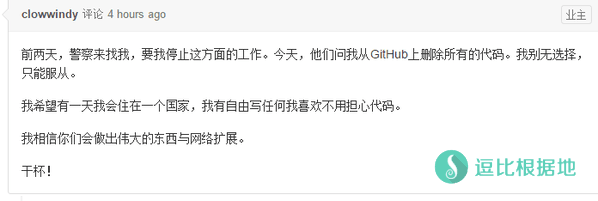

- Shadowsocks介绍相关问题
- Shadowsocks客户端相关问题
- Shadowsocks / ShadowsocksR / 安卓客户端 怎么使用？
- ShadowsocksR客户端 有什么隐藏的功能吗？
- Shadowsocks原版和ShadowsocksR的区别是什么？
- ShadowsocksR的混淆协议和插件有什么用？
- 如何知道自己是否需要使用ShadowsocksR服务端和客户端？
- ShadowsocksR 最新服务端为什么不能兼容原版（使用原版SS客户端），有什么影响？
- Shadowsocks客户端打开后提示 端口被占用 怎么办？
- Shadowsocks无法使用了怎么办？
- Shadowsocks客户端为什么分dotnet2.0/dotnet4.0 ？
- Shadowsocks的PAC是什么意思？
- Shadowsocks的负载均衡模式是什么意思？
- ShadowsocksR中的代理规则是什么？
- ShadowsocksR中的[代理规则 - 用户自定义]是什么？
- ShadowsocksR中的二级(前置)代理是什么？
- ShadowsocksR中的本地代理是什么？
- ShadowsocksR的 不修改系统(IE)代理 和 不经过代理直连 有什么区别？
- Shadowsocks怎么代理其他软件/玩游戏？
- Shadowsocks玩游戏如何？
- Shadowsocks服务器/服务端 相关问题
平时在网站评论和群里，老是有一些小白问一些很常见很基础的问题，一次两次还好，回复次数多了我也烦了。所以就干脆写一个 小白常见问题总结！到时候一丢网址就完事啦！
本文章会根据平时见到多的常见的问题不停的补充完善，欢迎评论中留言提建议或者指出错误！
Shadowsocks介绍相关问题
Shadowsocks作者是谁？是否还在更新？
Shadowsocks是由若干人因为兴趣而制作的一个项目，主要开发者和领导者是 @clowwindy ，但是在2015年下半年 被“相关部门”约谈喝茶，于是被迫删除Github的源码及相关文档。

但Shadowsocks属于开源项目，所以删除前已经有人备份，同时由另一个志愿者跟进维护原版 Shadowsocks 客户端，而其他基于Shadowsocks项目的第三方项目有：
ShadowsocksR、Shadowsocks-qt5、ShadowsocksCap等来维护更新Window/Linux客户端（其他系统的不一一举例了）。
Shadowsocks是否安全？加密性如何？
Shadowsocks是被设计来混淆数据，增加 墙 检查出流量特征所需的计算量，提高实时检测和匹配的成本，而不是加密。
SS的作者多次强调过这一点(Correct username/password auth model · Issue #169 · shadowsocks/shadowsocks · GitHub):
"We don't need security. We need indistinguishability from random bytes."
再三强调不要忘记SS作者的本意——这是一个能帮你上谷歌，上被墙屏蔽的网站的工具，其意义是瞒过 墙 的实时流量检测，而不是瞒过 墙 后面的master minds。
Shadowsocks是一个业余兴趣制作的项目，并没有经过严谨的密码学算法计算，Shadowsocks不是一个VPN，它无法100%的保护你的数据安全！
Shadowsocks和VPN 的区别是什么？
详细说明请看：Shadowsocks（Sock5代理）的PAC模式与全局模式与VPN的区别
Shadowsocks各分支版本地址
我目前已知并使用人数较多的Shadowsocks各分支版本。
客户端
- Shadowsocks-C# - Github
- Shadowsocks-qt5(Linux) - Github
- SSCAP - sourceforge
ShadowsocksR-C# - Github- ShadowsocksX-NG(MAC) - Github
- ShadowsocksX-R(MAC) - Github
- Shadowsocks-(安卓) - Github
ShadowsocksR-(安卓) - Github- Shadowsocks-libev-OpenWrt - Github
- ShadowsocksR跨平台客户端 - avege，electron-ssr
服务端
Shadowsocks客户端相关问题
Shadowsocks / ShadowsocksR / 安卓客户端 怎么使用？
新手使用教程请看：Shadowsocks的小白使用教程
ShadowsocksR客户端 有什么隐藏的功能吗？
请看：ShadowsocksR 客户端 各种隐藏使用技巧说明
Shadowsocks原版和ShadowsocksR的区别是什么？
Shadowsocks原版在更新到 v2.5.8 之后被“相关部门”约谈喝茶了，于是就停止了更新。但是应网友要求，另一个开发者把 v2.5.8 的一些严重BUG修复了更新为 v3.0，然后宣布不再管了。
Shadowsocks原版本身，也是具有协议和混淆功能的，也就是原版协议/混淆，只是只有一个不能自行选择，并且全靠作者维护，作者喝茶后，就GG了，其他的接手者只是继续完善其他的功能。
而ShadowsocksR是在 原版作者喝茶前，由另一个程序员 @breakwa11 制作的第三方版本，主要特点是增加了一些人性化功能，比如服务器连接统计、连接管理、协议转换、多重代理等。
最主要的是ShadowsocksR的混淆协议和插件功能，因为Shadowsocks原版项目已经无人维护，同时 墙 的工作人员也在不停的寻找效率批量匹配特征的方法，目前SS原版协议在大部分地区已经被 匹配流量特征QOS限速了。
所以ShadowsocksR的混淆协议和插件就应运而生，其目的就是欺骗 墙 目前的流量匹配功能和QOS限速。
需要说明的是，ShadowsocksR目前最新的协议和混淆是会增加延迟和损耗15%的速度(因为混淆需要时间，越复杂的混淆越不容易被墙发现，同时混淆时间越长)，所以如果你没有限速，或许用原版协议和混淆会更好。
你可以理解为在原版协议的基础上加强了混淆功能，所以在部分地区只有使用ShadowsocksR的混淆功能才能达到最佳速度，当然不同地区也不一样，所以最好都试试！
ShadowsocksR的混淆协议和插件有什么用？
不说各混淆的特性，只说一下 混淆协议插件 整体意义。
Shadowsocks的开发目的是 穿透防火墙，也就是专门科学上网用的。
Shadowsocks是被设计来 混淆数据，增加 墙 检查出流量特征所需的计算量，提高实时检测和匹配的成本。
但是 作者喝茶后，其他的Shadowsocks项目参与者都散了，已经无人维护Shadowsocks原版项目，再加上 墙 一直没有停下 针对Shadowsocks协议的 流量特征分析。
所以，现在的Shadowsocks原版协议在一些地区已经被严重匹配流量特征了。
早在2016年5月，我便已经发现了使用Shadowsocks原版被运营商限速，换成ShadowsocksR最新的协议和混淆后就恢复正常速度的例子了。
遇到这种情况会出现：
- Shadowsocks间歇性无法连接。
- Shadowsocks速度一开始很快，然后很快就降速很低。
- Shadowsocks所有账号，全部无法超过XXX KB/S的速度。
- Shadowsocks单一端口使用一段时间或者一些流量后无法使用，换端口后正常。
- Shadowsocks使用一段时间后无法连接，但是重新拨号（换IP）或者换Shadowsocks服务器后正常。
这是目前我已知的几种情况。
而ShadowsocksR的主要特点就是 混淆协议和插件，目的就是为了弥补 目前Shadowsocks原版协议已经 部分地区封锁的情况。
通过 改变流量特征 或者 伪装其他流量特征 来达到欺骗QOS 的目的。
但是，既然是欺骗，那就不可能一直骗下去，所以ShadowsocksR的混淆协议需要不停地更新，来对抗整个 墙的工作人员。
一些地区Shadowsocks原版协议封锁严重，使用最新的 混淆协议和插件可以缓解或者暂时解决上面所说的情况（尽量不要使用旧的，基本已经匹配了）
目前，各省份的运营商(墙)相对是独立的，并不是全网同步的，所以会遇到有些地区的运营商已经可以匹配Shadowsocks原版流量特征了，而有些没影响。
需要说明的是，ShadowsocksR目前最新的协议和混淆是会增加延迟和损耗15%的速度(因为混淆需要时间，越复杂的混淆越不容易被墙发现，同时混淆时间越长)，所以如果你没有限速，或许用原版协议和混淆会更好。
同样大部分地区还是 封锁较轻，这种地区根据当地的QOS策略不同，可能需要选择性的使用 混淆协议哈插件。
比如我这里，在低峰期阶段 使用混淆协议后 速度和不使用差不多，而在高峰期阶段，原版协议速度明显被QOS限速，使用混淆协议后，可以缓解限速，虽然不一定达到的Shadowsocks的最高速度水准，但是也比限速要强很多的。
从我的当地情况可以看出，混淆协议不仅分地区，而且分时间段，所以说来说去，总归一句话：多试试多观察 就知道需不需要使用ShadowsocksR的混淆协议和插件了！
简单的说，你的流量出墙的时候要经过两道关卡，第一个是运营商 检测Shadowsocks原版协议的，当特征匹配的话，就会阻断或者限速。
然后第二个关卡才是 运营商对所有普通宽带用户的统一限速，也就是不管你是什么类型的流量，都全部限速。当然，有的地区有第一个关卡，有的则没有。
而混淆协议只能欺骗第一个关卡：针对Shadowsocks原版协议的QOS限速，但并不能突破 运营商的统一QOS限速。
注意：ShadowsocksR的混淆协议功能只能针对 当地运营商对Shadowsocks原版协议QOS限速的情况才会有效果，如果只是 当地运营商对国际宽带统一QOS限速，那基本就没用了。
如何知道自己是否需要使用ShadowsocksR服务端和客户端？
首先，你使用Shadowsocks原版的服务端和客户端时，遇到了以下几种情况：
- Shadowsocks间歇性无法连接。
- Shadowsocks速度一开始很快，然后很快就降速很低。
- Shadowsocks所有账号，全部无法超过XXX KB/S的速度。
- Shadowsocks单一端口使用一段时间或者一些流量后无法使用，换端口后正常。
- Shadowsocks使用一段时间后无法连接，但是重新拨号（换IP）或者换Shadowsocks服务器后正常。
那就说明，你当地的运营商已经具备检测Shadowsocks原版协议/混淆的能力了，所以对其限速、丢包干扰等。
这时候你就需要使用ShadowsocksR服务端和客户端了。
当然，即使你没有遇到上面的情况，你也可以尝试使用ShadowsocksR服务端和客户端，说不定，你觉得没限速，实际现在正在被运营商限速呢。
当然，是否需要使用ShadowsocksR客户端和服务端，你需要同一个VPS上面安装Shadowsocks服务端和ShadowsocksR服务端。
然后分别用Shadowsocks客户端和ShadowsocksR客户端(使用最新混淆/协议)来测试速度。
如果速度一样，或者说ShadowsocksR的速度反而变慢了(因为协议和混淆会损失速度)，那么说明你的本地运营商并没有限速Shadowsocks，那么你用什么都行。
如果ShadowsocksR(使用最新混淆/协议)速度比Shadowsocks原版多很多，那么说明你本地运营商限速Shadowsocks原版了，那么你就需要使用ShadowsocksR了。
需要说明的是，ShadowsocksR目前最新的协议和混淆是会增加延迟和损耗10%左右的速度(因为混淆需要时间，越复杂的混淆越不容易被墙发现，同时混淆时间越长)，所以如果你没有限速，或许用原版协议和混淆会更好。
ShadowsocksR 最新服务端为什么不能兼容原版（使用原版SS客户端），有什么影响？
ShadowsocksR news:
服务端所有auth系列协议，为了保证其安全性，一律不再支持compatible模式，唯一一个支持的协议是 verify_sha1_compatible ，但将来可能会移除
混淆部分不变，也建议启用compatible
首先引用作者原话，最近这几天，ShadowsocksR作者与Shadowsocks libev服务端的作者吵架，各种带节奏的，然后ShadowsocksR宣布不再更新，同时也取消了ShadowsocksR服务端的兼容原版模式。我来解释一下取消后导致的问题。
大家都知道，在 ShadowsocksR服务端配置 协议和混淆的时候，在协议和混淆 比如协议： auth_sha1_v4 后面加上 _compatible 就可以实现：
既ShadowsocksR客户端(选择对应的协议/混淆) 和 Shadowsocks原版(或者SSR客户端选择原版协议/混淆) 都能链接你的 ShadowsocksR服务端(账号)。
取消 协议 兼容原版后，当你的ShadowsocksR服务端配置了 协议 后，只能ShadowsocksR的客户端选择对应的协议才可以连接(SSR客户端选择原版协议也是无法连接)，而使用Shadowsocks原版客户端无法连接。
只有你设置ShadowsocksR服务端的协议为 原版(origin)，那么才能ShadowsocksR客户端(选择原版协议)和Shadowsocks客户端都能链接你的ShadowsocksR服务端(账号)。
目前ShadowsocksR服务端是，auth_aes128_* 及以后的协议 都不支持兼容原版了，之前的协议可以兼容原版，混淆也都可以兼容原版。
当然了，这只针对 ShadowsocksR的协议，对于 混淆 参数是无所谓的，协议和混淆是可以分开的，你可以协议不设置兼容原版，而混淆设置兼容原版，或者不设置协议，而只设置混淆兼容原版，都可以，不存在协议开了，混淆也必须开的问题。
Shadowsocks客户端打开后提示 端口被占用 怎么办？
教程请看：Shadowsocks 端口已被占用的错误解决办法
Shadowsocks无法使用了怎么办？
Shadowsocks客户端为什么分dotnet2.0/dotnet4.0 ？
两个版本的功能是完全一样的，不同之处是根据你系统安装的 .NET Framework 支持库版本，这个支持库有v2.0/3.5/4.0/4.5版本，且每个版本都是独立的。
这里的 .NET Framework v2.0就是对应的 DotNe t2.0 Shadowsocks客户端，v4.0则是对应 DotNet 4.0的。
Shadowsocks是C#语言写的，所以需要安装这个微软的支持库，Shadowsocks原版是更新到2.5.2后就取消支持v2.0了，但是ShadowsocksR依然支持。
这支持库是一般来说XP是都没有安装的，Win7则是系统自带v2.0，win8以后是自带v4.0。
所以自己看着 支持库的安装 情况选择版本就行了，功能无差别。
Shadowsocks的PAC是什么意思？
代理自动配置（英语：Proxy auto-config，简称PAC）是一种网页浏览器技术，用于定义浏览器该如何自动选择适当的代理服务器来访问一个网址。
一个PAC文件包含一个JavaScript形式的函数“FindProxyForURL(url, host)”。这个函数返回一个包含一个或多个访问规则的字符串。用户代理根据这些规则适用一个特定的代理器或者直接访问。当一个代理服务器无法响应的时候，多个访问规则提供了其他的后备访问方法。浏览器在访问其他页面以前，首先访问这个PAC文件。PAC文件中的URL可能是手工配置的，也可能是是通过网页的网络代理自发现协议（WPAD）自动配置的。
———— 截取自维基百科
PAC中文名叫做代理自动配置，PAC其实就是 HTTP/SOCKS等代理服务器 + 网址规则，只有在你浏览器访问 网址规则中包含的网站 时才会走PAC文件中包含指定的HTTP/SOCKS代理服务器。
因为Shadowsocks作者喝茶后，原本维护更新的PAC（GFWlist）文件也被删除，不过现在由ShadowsocksR作者接手维护了（Github项目），由网友不断的提交新的被墙的网址和IP。目前分为网址白名单、黑名单、黑白名单，同时也有ip的名单。
有时候访问一些网站，可能被墙或者打开很慢，于是想要让这个网站走Shadowsocks代理，但是又不想开全局模式，那么你就需要看下面这个文章了。
Shadowsocks的负载均衡模式是什么意思？
Shadowsocks和ShadowsocksR都有个负载均衡功能，官方的解释是：
负载均衡功能，适用于网页浏览，不适用于看视频或下载等需要大流量的环境。如需下载请在连接统计窗口通过下载测速测试速度最快的服务器然后单独连接之。
简单的说就是，用用这个节点用用那个节点，不照着一个节点用，达成所有节点负载均衡的目的。所以大流量的时候不要开这个。
ShadowsocksR中的代理规则是什么？
ShadowsocksR目前分两种规则方式，那就是 PAC规则（系统代理模式） 和 代理规则 。
PAC规则 是根据PAC文件中的黑白地址名单来判断那些网站走代理。也就是判断 流量是否进入客户端。
当你要访问的网站满足 PAC里的设置，那么浏览器就会向代理服务器也就是客户端发送网站请求数据，这时候我们才进入了ShadowsocksR客户端，接下来我们就进入了代理规则判断环节。
代理规则 是根据IP判断，按设定的规则来判断进入 客户端的流量是直连还是走代理。
当你访问 XXX 网站，然后是全局或者满足PAC条件从而访问 XXX网站的请求数据流量进入了客户端，然后客户端会根据 XXX网站的IP来判断，如下：
- 绕过局域网，当IP属于局域网内的，那么SSR客户端就会让流量直连，反之则会让流量走代理（发送到SSR服务端）。
- 绕过局域网和大陆，当IP属于大陆内或局域网的，那么SSR客户端就会让流量直连，反之则会让流量走代理（发送到SSR服务端）。
- 绕过局域网和非大陆，当IP属于大陆外(非大陆IP都算大陆外)或局域网的，那么SSR客户端就会让流量直连，反之则会让流量走代理（发送到SSR服务端）。
这两种判断方式是相互配合使用的，先用系统代理模式来判断是否让数据进入SSR客户端，再用代理规则来判断进入SSR客户端的数据是直连还是走代理。
举个栗子：假设系统代理模式为 PAC，那么访问 www.google.com ，浏览器在PAC文件中匹配这个域名，并发现这个域名按PAC规则规则应走代理，所以 浏览器就会发送 访问网页数据到 PAC中的代理服务器(默认如127.0.0.1:1080)，于是SSR客户端就收到了 访问谷歌的数据，而这时候就该用 代理规则 判断了。
首先代理规则为：绕过局域网，则判断 www.google.com 域名的IP是否是局域网IP，然而不是局域网IP，于是走代理。
代理规则为：绕过局域网和大陆，则判断 www.google.com 域名的IP是否是局域网IP 或 大陆IP，然而不是局域网IP或大陆IP，于是走代理。
代理规则为：绕过局域网和非大陆，则判断 www.google.com 域名的IP是否是局域网IP 或 非大陆IP，然而是非大陆IP，于是不走代理，直连。
代理规则为：全局，不判断 www.google.com 域名的IP，直接走代理。
总归，如果你实在不理解，那么你就代理规则选择 全局，系统代理模式选择 PAC 即可，可以以后慢慢尝试和理解。
ShadowsocksR中的[代理规则 - 用户自定义]是什么？
教程请看：ShadowsocksR PC客户端中的 [代理规则 – 用户自定义] 功能使用教程
ShadowsocksR中的二级(前置)代理是什么？
二级(前置)代理指的是：当你链接Shadowsocks服务器的时候，并不会直接连接Shadowsocks服务器，而是先链接 二级(前置)代理服务器，然后二级(前置)代理服务器再去链接Shadowsocks服务器，可以达到 隐藏自己的IP 或 通过国内中转(国内服务器搭建代理服务器)来加速Shadowsocks。
同时上面提到的代理规则，就是给二级(前置)代理使用的，当你设置 代理规则 —— 全局 的时候，你访问国内的网站，你也是走代理服务器的，而你访问海外的网站也是先链接代理服务器然后再链接Shadowsocks服务器的，达到任何情况隐藏自己真实IP的目的，当然还有其他的作用就不一一说明了。
还有就是，二级(前置)代理，还有个主要使用情况是：
部分企业/学校 要链接互联网，必须要用 企业/学校 提供的HTTP代理服务器(一般都是为了防止你访问不该访问的网站)。
这样你就先链接 企业/学习 提供的代理服务器，然后再链接ShadowsocksR，然后利用ShadowsocksR的混淆特性，可以突破 企业/学校 的代理服务器网站限制封锁。
ShadowsocksR中的本地代理是什么？
本地代理 主要是给自己的 本机软件 和 局域网内其他设备 用的。
假设你设置的本地代理端口是默认的 1080 ，然后你这个电脑在局域网内的 内网IP是 192.168.0.5 。
本机软件，比如 IDM 想要经过ShadowsocksR下载墙外的内容，那么你可以IDM设置代理服务器 Socks5代理 127.0.0.1:1080 ，然后 IDM 就会通过ShadowsocksR下载墙外的文件了。
其他设备比如，你安卓手机想要不通过安卓客户端连接同局域网内的电脑上的ShadowsocksR，那么在安卓的设置中 设置代理服务器 192.168.0.5:1080 就可以连接到你电脑的 ShadowsocksR了，其他设备也是一样。
同局域网内其他设备想要链接你这个电脑上面的ShadowsocksR，只要在他们的浏览器或系统代理设置 设置为 192.168.0.5:1080 就行了，不需要开ShadowsocksR客户端。
ShadowsocksR的 不修改系统(IE)代理 和 不经过代理直连 有什么区别？
不修改系统(IE)代理 很好理解，就是ShadowsocksR客户端不会去 修改系统(IE)代理设置。
不经过代理直连，用 取消系统(IE)代理设置 或 还原/初始化系统(IE)代理设置 更合适一些，就是清理 PAC和全局模式 的系统代理设置。
Shadowsocks怎么代理其他软件/玩游戏？
Shadowsocks是属于 SOCKS 5代理 ，除非其他软件支持 设置SOCKS5代理 ，比如：
IDM你设置 SOCKS5代理 127.0.0.1 1080 ，IDM就会走Shadowsocks了，还有浏览器也是默认读取 系统代理设置的。
否则要让其他软件走Shadowsocks代理则需要以下两个软件：
- SocksCap64搭配Shadowsocks指定应用走Socks代理
- 使用Proxifier把shadowsocks代理转为真·全局(类VPN)
- ShadowsocksR 转为类VPN的全局代理（代理软件/游戏）神器 — SSTAP
注意：ShadowsocksR加速游戏请使用
原版(plain)或tls1.2_ticket_fastauth混淆插件，否则会增加延迟！
Shadowsocks玩游戏如何？
Shadowsocks可以通过上面那个问题的两个软件，使游戏走Shadowsocks代理。
当然大部分游戏都是需要UDP的，所以Shadowsocks服务端需要开启UDP（ShadowsocksR服务端默认开启）
不过玩游戏并不是说买个VPS搭建一个Shadowsocks，就能加速游戏的。大多数情况下都是减速的。
Shadowsocks代理有限的 解析图：
游戏服务器(服务端) <==> VPS(SS服务端) <==> Shadowsocks客户端 <==> 游戏客户端你的游戏客户端连接Shadowsocks客户端，然后Shadowsocks客户端连接Shadowsocks服务端（VPS），然后Shadowsocks服务端访问游戏服务器（服务端），最后再依次传输回来到你的游戏客户端。
这时候，你的Shadowsocks服务端就相当于一个中转服务器，你既要考虑，你链接VPS的延迟和丢包，也要考虑VPS链接游戏服务器的延迟和丢包，
去程：你 到 VPS 的延迟 + VPS 到 服务器 的延迟
回程：游戏服务器 到 VPS 的延迟 + VPS 到 你家 的延迟
你的实际延迟就是：去程和回程哪个延迟高，就是那个。不说游戏服务器，就说VPS和你之间，来程和回程 都有可能不是直连或不是一样 的
这还只是延迟，你还要考虑丢包和稳定性。
所以一般情况下，随便买个VPS搭建Shadowsocks来游戏加速，反而会延迟更高或丢包更高。
去程路由测试工具：
回程路由测试教程：
个人感觉Shadowsocks加速游戏想要好的质量太麻烦，建议还是使用游戏加速器，一般专业的游戏加速器都会让你选择对应的游戏和地区，这样根据游戏的服务器所在地和你的地区 来合理配置加速的节点 以达到最好的效果，差的那种就是给你一堆节点，让你自己选自己试。
注意：ShadowsocksR加速游戏请使用
原版(plain)混淆插件，否则会增加延迟！
Shadowsocks服务器/服务端 相关问题
为什么OpenVZ的VPS比Xen、KVM的VPS便宜很多？
具体的各虚拟化技术差别，百度谷歌都能搜到，我只说一些其他的。
现在，经常会看到一些很便宜的VPS，年付十几美元甚至几美元，但是发现几乎都是OpneVZ的，很多人就不清楚为什么。
首先我们经常看到的是OpenVZ和KVM，这两种虚拟化技术用的人比较多，主要是因为这两个是免费的，不需要购买官方授权，所以成本更低，IDC更喜欢用这两个。
OpenVZ一开始和KVM、XEN的价格差别也没有现在那么大。
但是OpenVZ的特点之一就是，对于商家来说很灵活，一个个OpenVZ的VPS在服务器上面就相当于一个个文件夹一样，对于商家来说，很容易操作超售。
而KVM、XEN相对就会麻烦一些，超售程度也有限，当然超售多的也有，只是很少。
因为OpenVZ灵活的特性，所以一些IDC就想到了其他增加利润的方法，那就是：超售降价，薄利多销。
当两个IDC的VPS配置一模一样，但是一个价格是其他IDC的一半，对于用户来说，很多用户都不清楚有什么具体区别，于是大量用户就会被低价吸引，而超售降价的IDC就成功抢占市场，增加利润。
其他正常价格的IDC，看到这个情况，在利润的诱惑下，也都纷纷的通过超售降价，薄利多销的方式来抢占市场，于是你争我抢，价格越来越低，要维持利润，就需要更多的超售。
我以前曾经买过很多便宜几美元/年的OpenVZ的VPS，很多VPS一开机就只剩下三分之一内存了，甚至超售严重的，你内存根本抢不到，超售到开机都开不开的我都遇见过两次，从此我就知道了：一分钱一分货！
本文章会根据平时见到多的常见的问题不停的补充完善，欢迎评论中留言提建议或者指出错误！
转载请超链接注明：逗比根据地 » 关于Shadowsocks的小白常见问题 总结篇
责任声明：本站一切资源仅用作交流学习，请勿用作商业或违法行为！如造成任何后果，本站概不负责！


至于现在还保持更新的代理软件：V2ray、SS、Brook、Goflyway、DAZE什么的，挺多的，不过只有前者几个生态相对完善，剩下的小众代理软件，基本上就 PC 用用了(有的有安卓)。
墙检测到你的服务器可能是代理服务器时，就会TCP回程阻断，可能是封锁单个端口，也可能是22 80以外端口封锁，也可能是全部端口封锁。
你可以用 tcping 来测试端口：Windows 使用 TCPing 工具来获取 TCP延迟、端口通顺情况、已禁Ping服务器的延迟
[端口设置]中的各功能我也不清楚，官方也没什么教程解释。
阴谋论，因为毫无意义。安全性？可靠性？
这东西看你自己，你不相信作者，那就不要使用他写的软件，作者又没让你掏钱？整天被带节奏都不知道。
简单的来说，使用ZeroNet建立的网站，只要有人访问过，那就无法封杀。